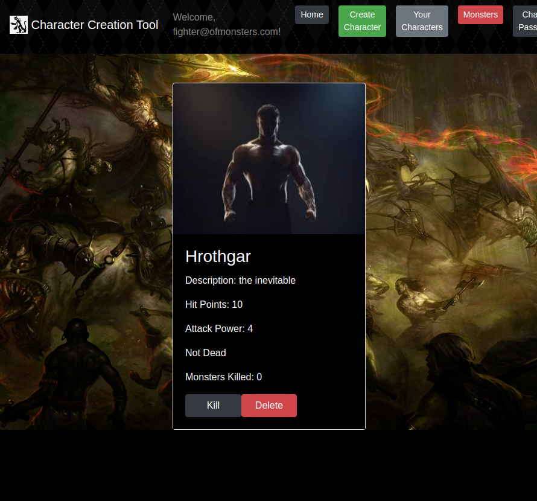
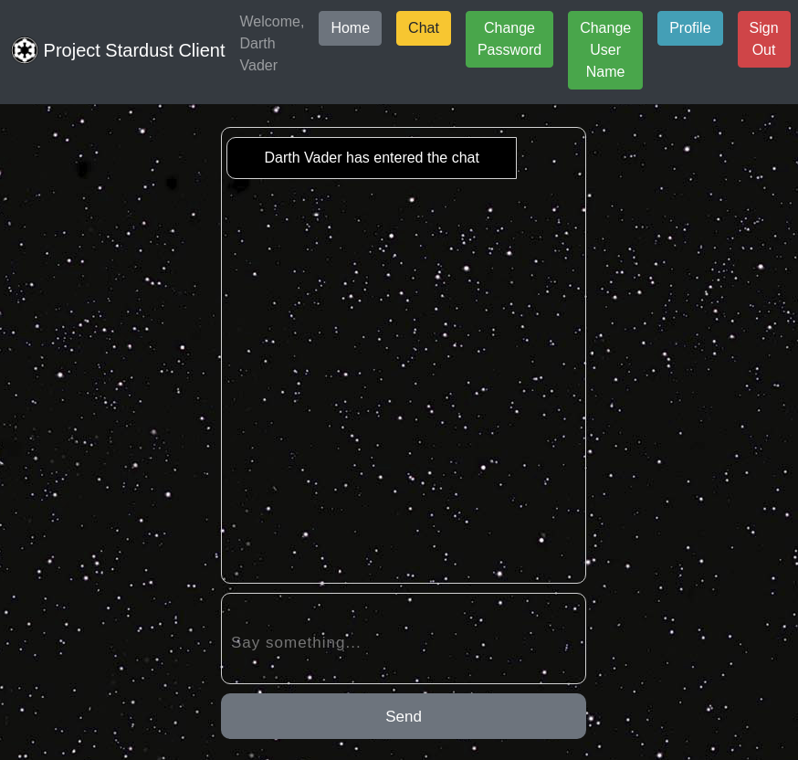
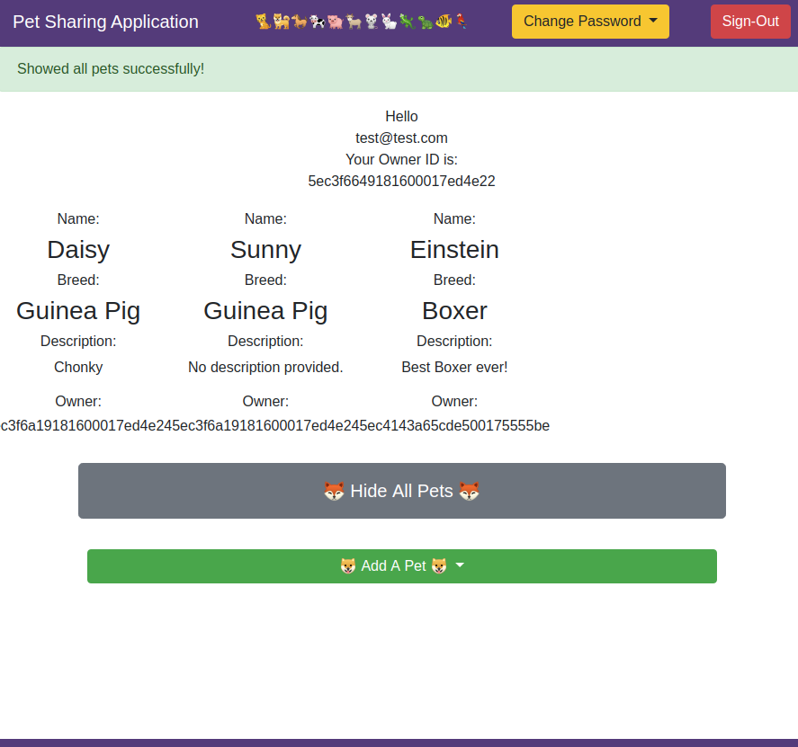
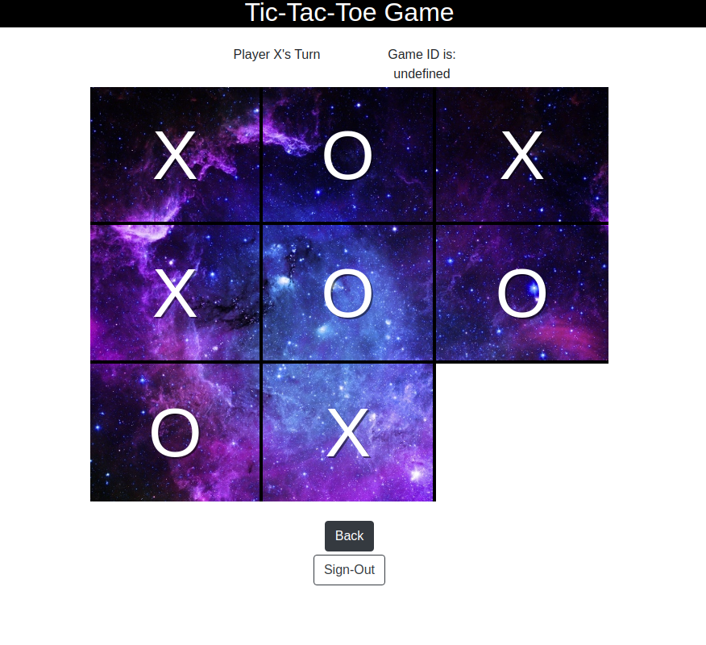

I work across e-commerce support, POS and payment hardware, partner integrations, and data analysis. I investigate code issues, contribute fixes, and coordinate payment-provider integrations and token migrations. I develop reusable utilities with AI assistance and help customers and teammates through remote troubleshooting, clear documentation, and training.
Outside of my professional life I enjoy reading, swimming, hiking, camping, and spending time with my wife and pets.
Additional familiarity: React and Python. Earlier coursework (2020): Express and Django.

Built a React/JavaScript client and Django/Python API for authenticated character creation, viewing and attribute updates.
View Deployed Client
Collaborated on a React and Express chat application with Socket.io, authentication and editable user profiles.
View Deployed Client
Built a JavaScript/Express pet-sharing application with authentication, shared listings and editing restricted to each owner.
View Deployed Client
Built a front-end Tic-Tac-Toe application with JavaScript, HTML, jQuery and SASS, integrated with an existing API.
View Deployed ClientRemote
Technical Support Engineer: September 2026 - Present
Infrastructure Support Engineer: August 2023 - September 2026
Technical Support Engineer: April 2022 - August 2023
Promoted internally in August 2023. The September 2026 title change followed company-wide career and team title alignment.
Current responsibilities and contributions across my Commerce7 roles:
Serve as a primary technical escalation resource for supported POS/payment terminals and printers, troubleshooting device, connectivity and setup issues through remote sessions and video calls.
Coordinate payment-provider integrations and token migrations between businesses, gateway partners and internal teams; track progress, identify failures and engage technical owners to resolve them.
Investigate code-level product issues, contribute fixes, and submit repository changes within the team's development workflow.
Use REST API requests and targeted data queries to investigate complex technical escalations and communicate findings across teams.
Develop and use reusable MySQL query tools with JavaScript and Node.js using AI assistance; share code with teammates for review ahead of a broader rollout.
Develop remote collaboration tools and workflows aimed at reducing unnecessary meetings, improving communication, and making problem-solving more efficient and enjoyable.
Work with documentation and education teams to keep setup and troubleshooting guidance accurate. Automated the collection of system documentation to support existing guides and training.
Taught teammates technical workflows and troubleshooting approaches, explaining the reasoning behind them; helped record hardware training videos.
Remote
Investigated escalated product and payment issues, coordinating development follow-up through Zendesk and Zenhub.
Worked with MongoDB and AWS-hosted databases; ran AWS Lambda scripts to synchronize data, primarily with Square.
Transitioned to Commerce7 following its acquisition of VineSpring.
Remote
Completed 480+ hours of individual and team coursework; certificate issued July 2020. Built four software projects spanning front-end development, REST APIs, authentication and full-stack applications. Selected projects are shown above as 2020 coursework.
Marlborough, MA
Led and trained approximately 20 temporary agents supporting a Windows 7 to Windows 10 migration involving roughly 12,000 computers.
Wrote operating procedures and training documentation from engineering guidance; used SQL to verify database backups before device migration.
Coordinated scheduling, telephone support and remote access throughout the migration.
Hudson, MA
Supported property-appraisal software and Oracle/SQL database environments, including running SQL scripts and remotely troubleshooting customer systems.
Hudson, NH
Supported small-business internet, phone, video and billing services; handled escalations and documented troubleshooting and service changes.
Westminster, MA
Customer support and accounts-receivable work in a temporary assignment.
Wayland, MA
Responded to phone calls for customer service while answering 3+ live chat conversations and answering emails.
The role was mainly working toward having customers speak with travel agents affiliated with the company.
Coordinated transfer and limousine arrangements through phone, chat and email.
Westborough, MA
Started as a temp and was hired full time after a year and promoted from specialist I to II.
Was part of the e-solutions mentorship program.
Supported all consumer products and wifi devices through phone, chat and email.
Commissary Representative - Keefe Commissary Network - Statewide in MA
Armed Service Technician/Driver - Loomis - Boylston, MA
Overnight Store Clerk - Archer's Mobil - Littleton and Ayer, MA
Maintains accountability of high value information and product in secure environments.
Works remotely without direct supervision.
Software Engineering Immersive | April - June 2020. Completed 480+ hours of coursework; certificate issued July 2020.